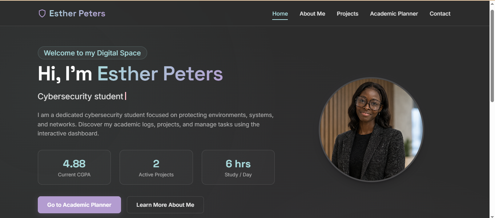

Academic Website & Portfolio
A responsive multi-page academic hub and personal portfolio built using semantic HTML5, glassmorphism CSS, and vanilla JS. It features a microphone voice recorder with IndexedDB storage, dynamic skill animations, a persistent academic task manager, and full contact form verification.
HTML5
CSS Grid
JavaScript